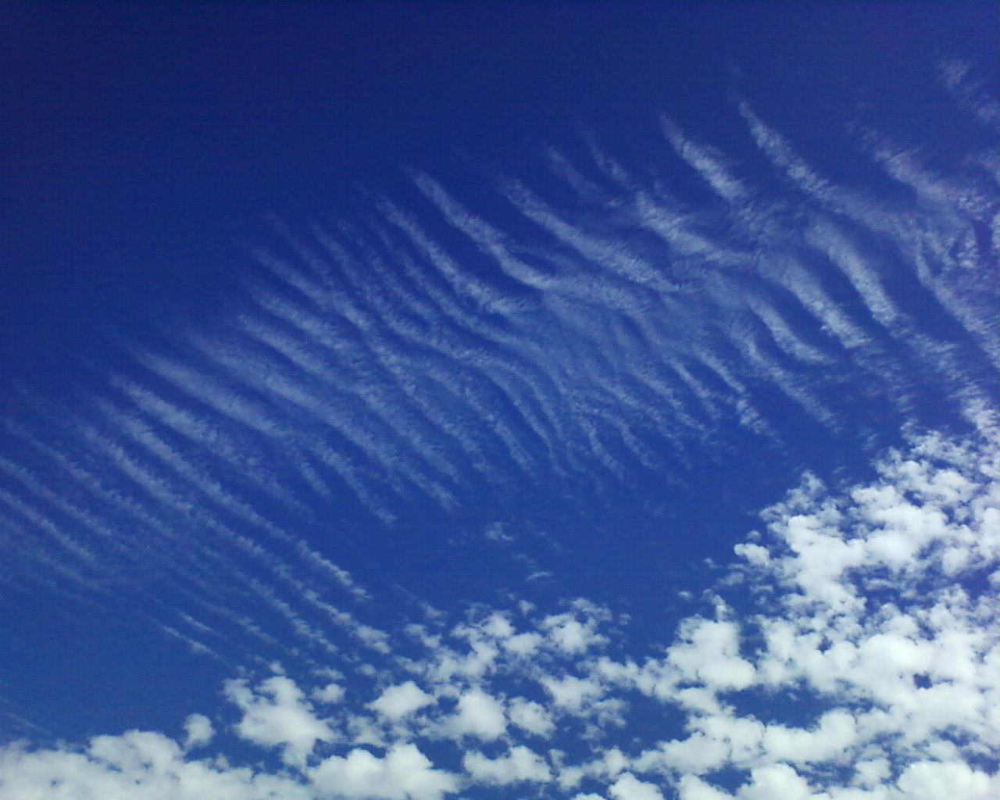

Cirrus Clouds

About Cirrus Clouds
Cirrus (cloud classification symbol: Ci) is a genus of atmospheric cloud generally characterized by thin, wispy strands, giving the type its name from the Latin word cirrus meaning a ringlet or curling lock of hair.The strands of cloud sometimes appear in tufts of a distinctive form referred to by the common name of "mares' tails". Cirrus generally appears white or light gray in color. It forms when water vapor undergoes deposition at altitudes above 5,000 m (16,500 ft) in temperate regions and above 6,100 m (20,000 ft) in tropical regions. It also forms from the outflow of tropical cyclones or the anvils of cumulonimbus cloud. Since cirrus cloud arrives in advance of the frontal system or tropical cyclone, it indicates that weather conditions may soon deteriorate. While it indicates the arrival of precipitation (rain), cirrus cloud per se produces only fall streaks (falling ice crystals that evaporate before landing on the ground). Jet stream-powered cirrus can grow long enough to stretch across continents, but it remains only a few kilometers deep. When visible light interacts with the ice crystals in cirrus cloud, it produces optical phenomena such as sun dogs and haloes. Cirrus is known to raise the temperature of the air beneath the main cloud layer by an average of 10 °C (18 °F). When the individual filaments become so extensive that they are virtually indistinguishable from one another, they form a sheet of high cloud called cirrostratus. Convection at high altitudes can produce another high based genus called cirrocumulus, a pattern of small cloud tufts that contain droplets of supercooled water. Cirrus clouds form on other planets, including Mars, Jupiter, Saturn, Uranus, and possibly Neptune. They have even been seen on Titan, one of Saturn's moons. Some of these extraterrestrial cirrus clouds are composed of ammonia or methane ice rather than water ice. The term cirrus is also used for certain interstellar clouds composed of sub-micrometer sized dust grains.
Description
Cirrus cloud ranges in thickness from 100 m (330 ft) to 8,000 m (26,000 ft), with an average thickness of 1,500 m (4,900 ft). There are, on average, 30 ice crystals per liter (96 ice crystals per gallon), but this ranges from one ice crystal per 10,000 liters (3.7 ice crystals per 10,000 gallons) to 10,000 ice crystals per liter (37,000 ice crystals per gallon), a difference of eight orders of magnitude. The length of each of these ice crystals is usually 0.25 millimeters long, but they range from as short as 0.01 millimeters or as long as several millimeters. The ice crystals in contrails are much smaller than those in naturally-occurring cirrus cloud, as they are around 0.001 millimeters to 0.1 millimeters in length. Cirrus can vary in temperature from −20 °C (−4 °F) to −30 °C (−22 °F). The ice crystals in cirrus cloud have different shapes in addition to different sizes. Some shapes include solid columns, hollow columns, plates, rosettes, and conglomerations of the various other types. The shape of the ice crystals is determined by the air temperature, atmospheric pressure, and ice supersaturation. Cirrus in temperate regions typically have the shapes segregated by type: the columns and plates tend to be at the top of the cloud, whereas the rosettes and conglomerations tend to be near the base. In the northern Arctic region, cirrus tend to be composed of only the columns, plates, and conglomerations, and these crystals tend to be at least four times larger than the minimum size. In Antarctica, cirrus are usually composed of only the columns, and these columns are much longer than normal.
Relation to other clouds
Cirrus clouds are one of three different genera of high-étage (high-level) clouds. High-étage clouds form at 5,000 m (16,500 ft) and above in temperate regions. The other two genera, cirrocumulus and cirrostratus, are also high clouds. In the intermediate range, from 2,000 m (6,500 ft) to 7,000 m (23,000 ft) in temperate regions, are the mid-étage clouds. They comprise two or three genera depending on the system of height classification being used: altostratus, altocumulus, and, according to WMO classification, nimbostratus. These clouds are formed from ice crystals, supercooled water droplets, or liquid water droplets. Low-étage clouds, form at less than 2,000 m (6,500 ft). The two genera that are strictly low-étage are stratus, and stratocumulus. These clouds are composed of water droplets, except during winter when they are formed of supercooled waterdroplets or ice crystals if the temperature at cloud level is below freezing. Two additional genera usually form in the low altitude range, but may be based at higher levels under conditions of very low humidity. They comprise the genera cumulus, and cumulonimbus, which along with nimbostratus, are often classified separately as clouds of vertical development, especially when their tops are high enough to be composed of super-cooled water droplets or ice crystals. The altitudes of high-étage clouds like cirrus vary considerably with latitude. In the polar regions, they are at their lowest, with a minimum altitude of only 3,000 m (10,000 ft) to a maximum of 7,600 m (25,000 ft). In tropical regions, they are at their highest, ranging in altitude from about 6,100 m (20,000 ft) to around 18,000 m (60,000 ft). In temperate regions, they range in altitude from 5,000 m (16,500 ft) to 14,000 m (45,000 ft)—a variation in contrast to low-étage clouds, which do not appreciably change altitude with latitude.
Cirrocumulus
Cirrocumulus clouds form in sheets or patches and do not cast shadows. They commonly appear in regular, rippling patterns or in rows of clouds with clear areas between. Cirrocumulus are, like other members of the cumuliform category, formed via convective processes. Significant growth of these patches indicates high-altitude instability and can signal the approach of poorer weather. The ice crystals in the bottoms of cirrocumulus clouds tend to be in the form of hexagonal cylinders. They are not solid, but instead tend to have stepped funnels coming in from the ends. Towards the top of the cloud, these crystals have a tendency to clump together. These clouds do not last long, and they tend to change into cirrus because as the water vapor continues to deposit on the ice crystals, they eventually begin to fall, destroying the upward convection. The cloud then dissipates into cirrus. Cirrocumulus clouds come in four species: stratiformis, lenticularis, castellanus, and floccus. They are iridescent when the constituent supercooled water droplets are all about the same size.
Cirrostratus
Cirrostratus clouds can appear as a milky sheen in the sky or as a striated sheet. They are sometimes similar to altostratus and are distinguishable from the latter because the sun or moon is always clearly visible through transparent cirrostratus, in contrast to altostratus which tends to be opaque or translucent. Cirrostratus come in two species, fibratus and nebulosus. The ice crystals in these clouds vary depending upon the height in the cloud. Towards the bottom, at temperatures of around −35 °C (−31 °F) to −45 °C (−49 °F), the crystals tend to be long, solid, hexagonal columns. Towards the top of the cloud, at temperatures of around −47 °C (−53 °F) to −52 °C (−62 °F), the predominant crystal types are thick, hexagonal plates and short, solid, hexagonal columns. These clouds commonly produce halos, and sometimes the halo is the only indication that such clouds are present. They are formed by warm, moist air being lifted slowly to a very high altitude. When a warm front approaches, cirrostratus clouds become thicker and descend forming altostratus clouds, and rain usually begins 12 to 24 hours later.